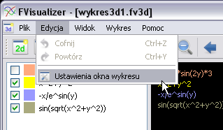
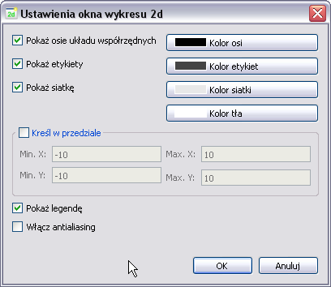
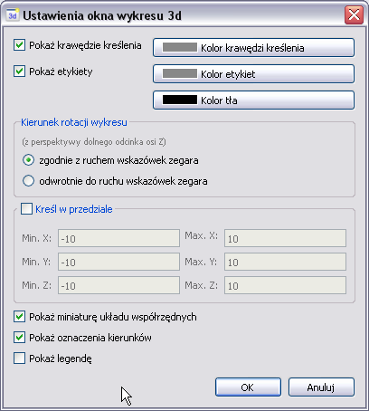

3. Ustawienia okna wykresu
Edycja ustawień okna wykresu możliwa jest po wybraniu opcji Ustawienia okna wykresu dostępnej w menu Edycja. Wybranie opcji powoduje otwarcie okna ustawień dla okna wykresu aktywnego w obszarze roboczym.

Opcja Ustawienia okna wykresu.
3.1. Ustawienia okna wykresu 2d

Ustawienia okna wykresu funkcji jednej zmiennej.
- Pokaż osie układu współrzędnych - określa, czy na danym wykresie widoczne będą osie układu współrzędnych. Przycisk Kolor osi pozwala na określenie ich koloru.
- Pokaż etykiety - opcja określa, czy na danym wykresie widoczne będą etykiety liczbowe. Przycisk Kolor etykiet pozwala na określenie ich koloru.
- Pokaż siatkę - opcja określa, czy w tle danego wykresu 2d widoczna będzie siatka współrzędnych. Przycisk Kolor siatki pozwala na określenie jej koloru.
- Kolor tła - przycisk pozwala na wybór koloru tła wykresu.
- Kreśl w przedziale - opcja pozwala na określenie przedziału kreślenia. Wszystkie wykresy funkcji zostaną przeskalowane do wskazanego przedziału. UWAGA: wartość określająca dolną granicę przedziału dla każdej z osi musi być niższa od wartości określającej jego górną granicę.
- Pokaż legendę - opcja określa, czy w lewym górnym rogu wykresu widoczna będzie legenda.
- Włącz antialiasing - opcja określa, czy krzywe kreślone będą z opcją wygładzania krawędzi.
3.2. Ustawienia okna wykresu 3d

Ustawienia okna wykresu funkcji dwóch zmiennych.
- Pokaż krawędzie kreślenia - określa, czy na danym wykresie 3d wyświetlane będą krawędzie sześcianu stanowiącego wycinek przestrzeni w którym kreślone będą wykresy funkcji. Przycisk Kolor krawędz pozwala na określenie koloru krawędzi.
- Pokaż etykiety - opcja określa, czy na danym wykresie widoczne będą etykiety liczbowe. Przycisk Kolor etykiet pozwala na określenie ich koloru.
- Kolor tła - przycisk pozwala na wybór koloru tła wykresu.
- Kierunek rotacji wykresu - zależnie od wyboru włączenie rotacji wykresu za pomocą opcji Rotacja wykresu spowoduje obracanie wykresu zgodnie z ruchem wskazówek zegara albo w kierunku odwrotnym do niego. Kierunek rotacji określany jest z perspektywy dolnego odcinka osi Z.
- Kreśl w przedziale - opcja pozwala na określenie przedziału kreślenia. Wszystkie wykresy funkcji zostaną przeskalowane do wskazanego przedziału. UWAGA: wartość określająca dolną granicę przedziału dla każdej z osi musi być niższa od wartości określającej jego górną granicę.
- Pokaż miniaturę układu współrzędnych - opcja określa, czy w dolnym lewym rogu wykresu widoczna będzie miniatura wskazujące kierunki osi układu współrzędnych.
- Pokaż oznaczenia kierunków - opcja określa, czy na wykresie 3d widoczne będą oznaczenia kierunków dla każdej z osi układu współrzędnych.
- Pokaż legendę - opcja określa, czy w lewym górnym rogu wykresu widoczna będzie legenda.